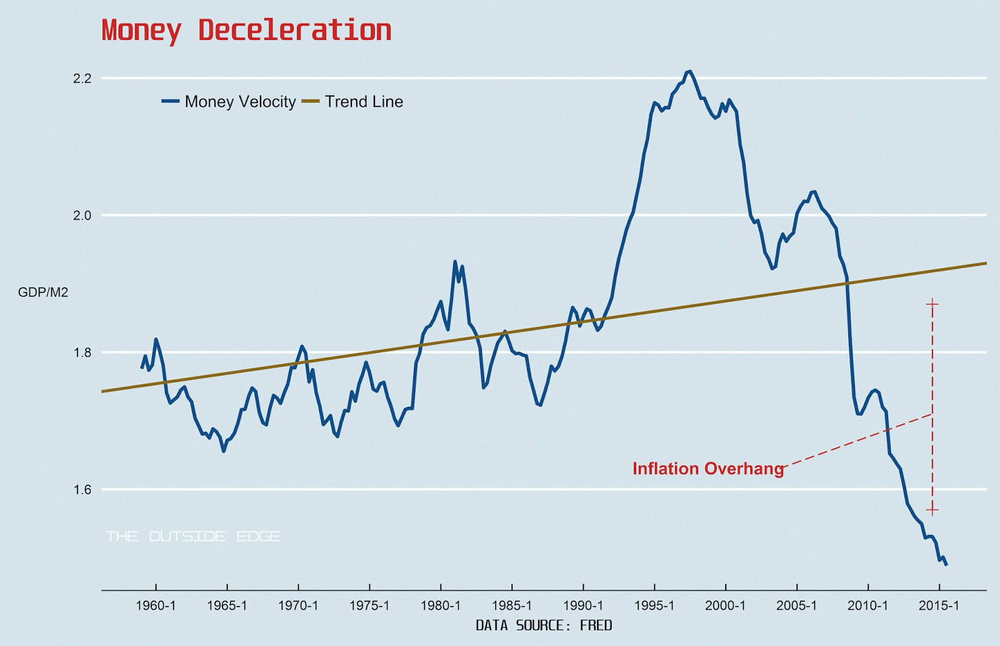
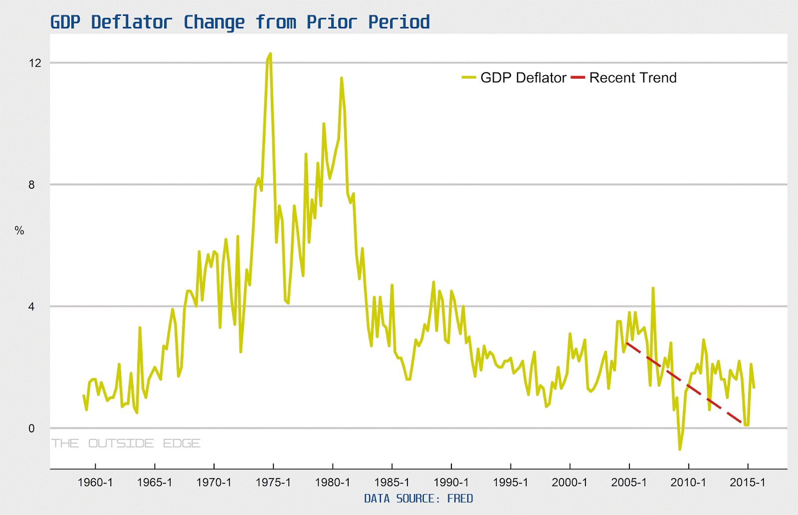
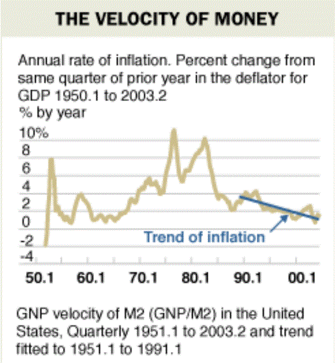
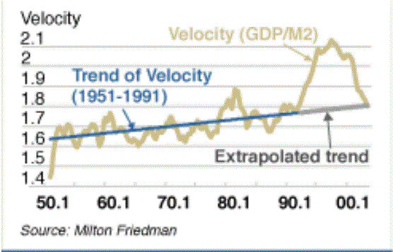

As Krugman might say, "...it's in the market, stupid." The most influential economy in the world is poised to raise interest rates, but not because of inflation. Central banks in major parts of the world are still at the zero bound, and core prices are behaving as they should when targeted only because liquidity is trapped on balance sheets as inventory. What happened? Why did monetary easing take half a decade to jump-start the US dollar economy? The answers are common knowledge: banks bought banks with the money, main street lending didn't increase, dealers expanded balance sheets, corporate savings stayed high, investment stayed low; and only now, six years later, is money supply warming up wages and consumption, if it isn't fiscal expenditure.
Economists have been discussing causality (or lack thereof) between money supply and prices for the entire last century (see here in the context of viable central bank tools); but, theoretically, the accounting identity MV = PY is supposed to remain valid in the long-run--more dollars chasing the same goods push prices up. And this is exactly why central bankers should be worried, and interest rates could have gone up earlier. Today the relationship between money supply and output is like nothing it has ever been. By traditional measures, money velocity relative trend has all but stopped. To visualize this recall the chart from Friedman's 2004 article, "The Fed's Thermostat" (now you have to sign-in to read it, so see both of his charts below). His somewhat concessionary admonition, that central bankers since the late 80's had done a better job by targeting inflation, was contingent on a trend-bound money velocity indicator.
Here is a remake of the same chart using current data (a remake of his other chart is also available below).
 Graphic Author: Yuri TricysIn his chart, the final segment of the trend line is extrapolated, but the point is clear: not only is money velocity still moving in the wrong direction, it's also frighteningly far from trend. The inflation overhang in the US is so abnormally gigantic it shouts, "outlier." The chart prompts at least two questions: 1) how will money velocity get back to trend?, and 2) does it have to? Answers to the first question are the point of this post--proceed with caution. Answers to the second are the can-opening caveats.
Proceed with caution because prices are more elastic than output and money supply is arguably less complicated to increase than decrease. In other words, inflation overhang means expect inflation. In the case where external money demand is low, a little inflation is good but too much is a bad thing (see Brazil, for a tame example). Where external money demand is high, as in the US where it is the highest by volume in the world, too much inflation, aside from the usual malaise, could undermine hegemonic authority and increase political friction.
In answer to the second question, inference would be a lot easier if dependent variables were driven by trend, but everybody knows reversion to the mean is at least somewhat probable. What I'm really getting at is the definition of money velocity itself. Nominal markets, like financial ones, and real markets, like goods markets, are linked through reflexivity, the most prominent example given in the relationships between mark-to-market accounting, corporate health, and unemployment; but, in terms of a decent thermostat, it's the supply of money in real markets that should be compared to output, and a lot of M2 if not legally is at least by expectation anchored to financial markets. The inflation overhang might not be as bad as it looks because it might not be as large as it looks; there is money in the trap that may never come out. And all this leads to seemingly unanswerable questions, like, for example, how big can the ratio of global financial market capitalization to capital base get?
One problem when thinking along this line is that, with respect to balance sheets and instantaneous transactions, as a globe, we've outgrown any situation known before. It's no longer possible to sum ex-post our worldly experience and prognosticate money growth effects with any assurance ex-anti. Global capital base continues to grow, not only through the effects of population growth, but also the realization of Hernando De Soto's suggested developing economy fix (the formalization of undocumented property rights). No-one knows. The effects of credit over-expansion, though more identifiable (and tangible) than the those from wealth expansion, are also abstruse, as any and every asset bubble chaser will surely attest. How much credit is too much credit? Sure, this time is different, but what about Japan?
The point really is that it's time to think about that money in the trap. 2008 would have been a better time, but it's 2015, US equity markets are sitting on a the tail of a 15 year rather volatile bull, and the FED is about to raise interest rates. There are bigger than ever amounts of money swashing around in mammoth unstable capacitor-like markets and no way to predict where those flows are going to go. International interest rate spreads could lead to massive bi-lateral capital flows, contagion could spread like wildfire, hot money could cool rapidly through investment and push prices up. The latter case, an increase in investment, better if funded through retained corporate earnings, was hoped for--no, anticipated--after easing, but gradually, not all at once. America is sitting on volatile over-inflated markets, it's cold outside, the temperature inside still isn't rising, and it's time to take another look at the thermostat.
 Graphic Author: Yuri TricysTime-series GDP deflator and money velocity, from Friedman's 2004 article, "The Fed's Thermostat." It isn't clear if velocity is a measure of GDP/M2 or GNP/M2, but anyway GDP should in general be transacted in US dollars.
comments powered by Disqus